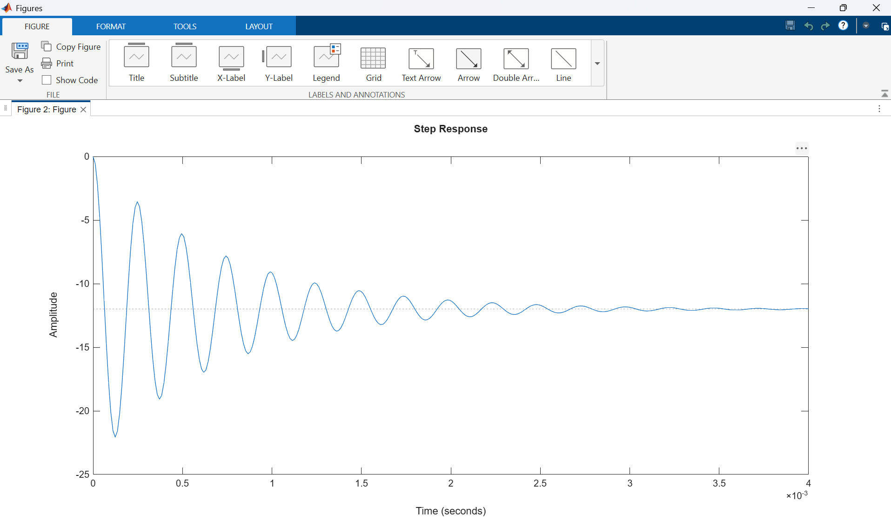
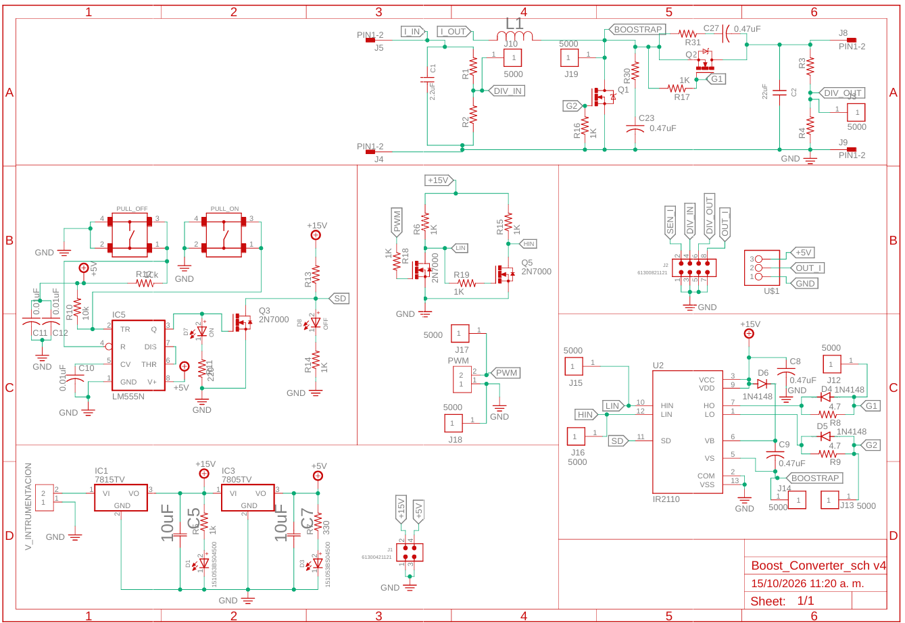
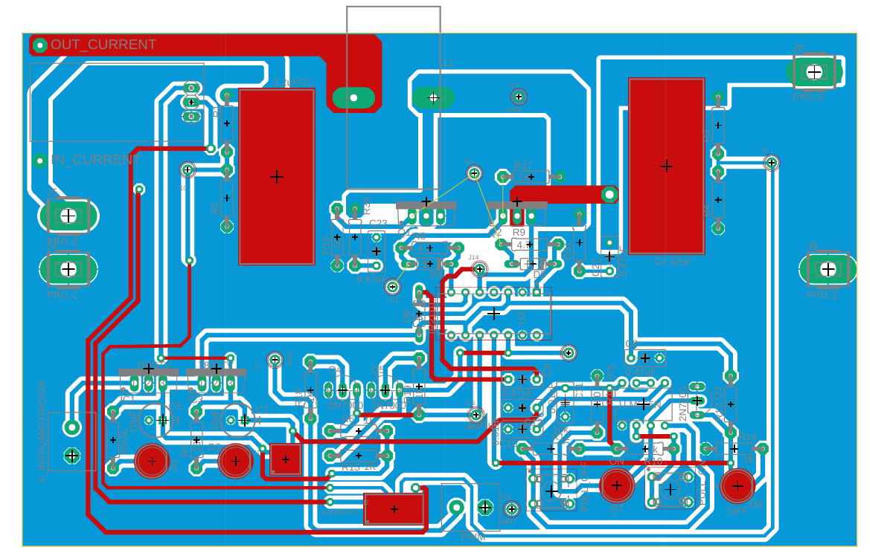
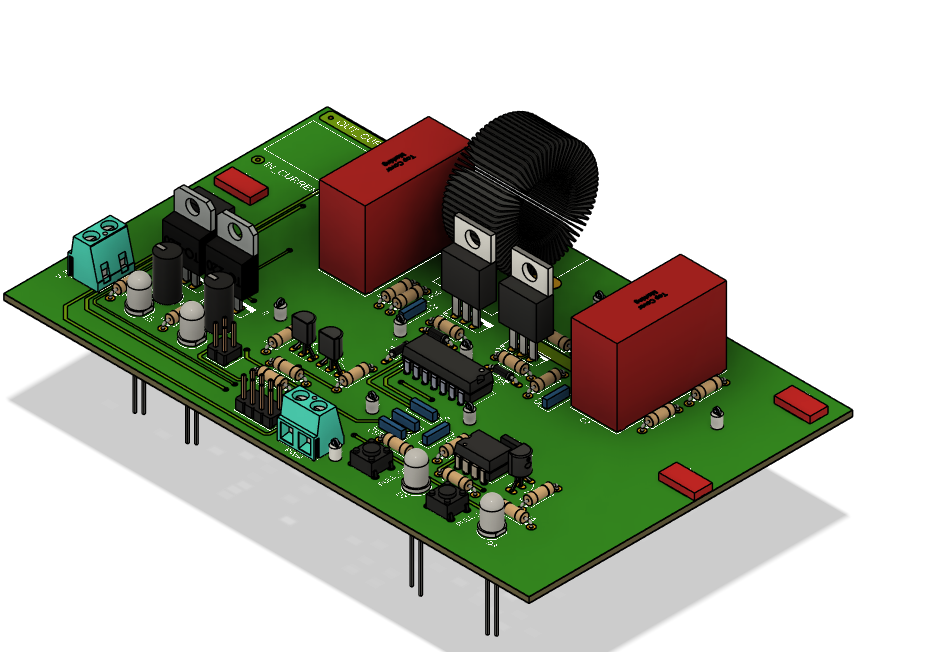
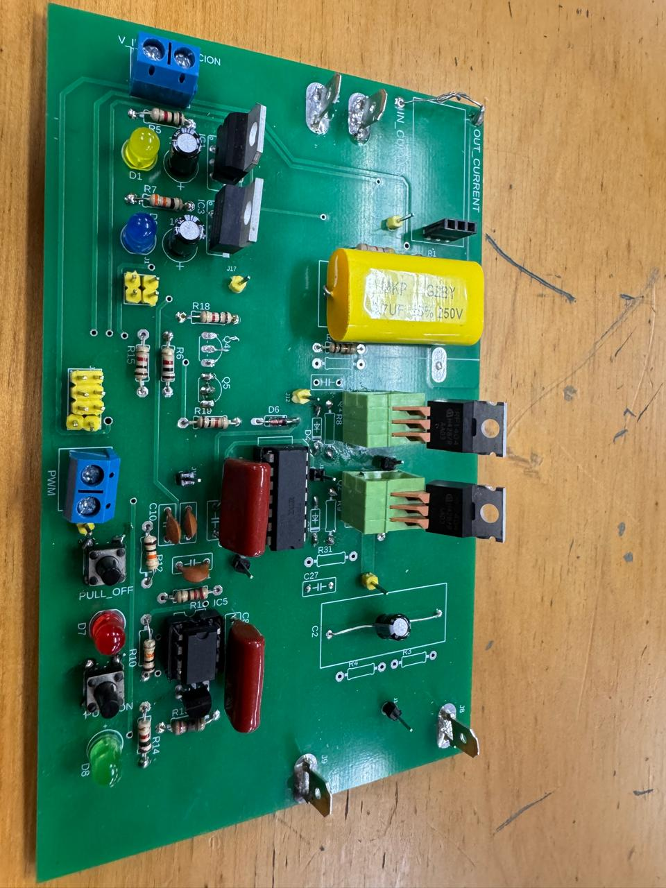

El problema y el contexto
Un panel solar entrega un voltaje que cambia con la irradiancia y la temperatura. Para que el convertidor trabaje cerca del punto de máxima potencia, hay que controlar el voltaje de entrada, no el de salida.
Este proyecto modela el sistema panel + boost, lo implementa en una placa propia y lo regula con un PID discreto. Es la base de un proyecto de grado: un reconfigurador de celdas que alterne entre serie y paralelo según el voltaje que necesite la salida.
Con ciclos de trabajo cercanos a 1, el boost pierde eficiencia por la resistencia de sus componentes y se calienta. Por eso el controlador limita D entre 3.9 % y 87.9 %.
El panel se representó con un modelo linealizado: una fuente de 0.68 A en paralelo con 75 Ω, alrededor de 6 V y 0.6 A.
Etapas funcionales
De izquierda a derecha, así viaja la energía y la información por el sistema.
Generación
Panel de ≈ 6 V y 0.6 A, con Rpv ≈ 75 Ω. En las pruebas se emuló como fuente de corriente.
Potencia
Inductor, MOSFET y capacitor de salida elevan el voltaje a 12 V sobre 40 Ω.
Sensado
Un divisor resistivo de relación 1.212 baja el voltaje del panel al rango de 5 V del ADC.
Control
PID incremental en el Arduino UNO. Ajusta el ancho de pulso para llevar vp a la referencia.
Disparo y protección
El IR2110 maneja los MOSFET. Un LM555 corta el PWM por hardware con PULL_OFF.
Modelo matemático
Se usó un modelo promediado en espacio de estados (Erickson y Maksimović, 2020). Los estados son el voltaje del panel vp y la corriente del inductor iL; el voltaje de salida se tomó constante en 12 V. Las matrices se obtuvieron con Jacobianos en MATLAB.
diL/dt = (vp − vC(1 − d)) / L
De ahí sale la función de transferencia entre el voltaje del panel y el ciclo de trabajo:

Ficha técnica
| Parámetro | Valor |
|---|---|
| Microcontrolador | Arduino UNO (ATmega328P, 16 MHz, ADC de 10 bits) |
| Voltaje de entrada / salida | 6 V / 12 V |
| Carga | 40 Ω |
| Frecuencia de conmutación | 31.25 kHz (Timer1, TOP = 511) |
| Inductor, capacitores | L = 330 µH · Cpv = 4.7 µF · Co = 47 µF |
| MOSFET de potencia | IRF1404 (40 V, RDS(on) = 4 mΩ, ID = 202 A) |
| Driver de compuerta | IR2110 con red bootstrap |
| Apagado por hardware | LM555 sobre la entrada SD del driver |
| Reguladores auxiliares | 7815 (+15 V) y 7805 (+5 V) |
| Control | PID discreto incremental, muestreo de 2 ms (500 Hz) |
| Rango de ciclo de trabajo | ≈ 3.9 % a 87.9 % (OCR1A = 470 − d, saturado entre 20 y 450) |
| Diseño de PCB | Autodesk EAGLE |
| Costo de materiales | 50.000 COP |
Resultados
El controlador mantiene el voltaje del panel cerca de la referencia de 4.4 V, con un error de 9.1 %. Se comportó casi como un integrador puro: las acciones proporcional y derivativa pesan muy poco.
| Parámetro | Esperado | Medido |
|---|---|---|
| Frecuencia PWM | 31 250 Hz | 30 346 Hz |
| Ciclo de trabajo en estado estacionario | 0.50 | 0.56 |
| Voltaje del panel vp (referencia 4.4 V) | 4.4 V | 4.8 V |
| Voltaje de salida Vo | 12 V | 12.19 V |
Limitaciones
- El tiempo de establecimiento es de unos 3 s y no cumple el criterio de diseño de 1 ms. Las ganancias se ajustaron de forma experimental.
- El modelo se linealizó en 6 V y se probó en 4.4 V; solo se validó en un punto de operación.
- No se probó con sombreado parcial ni con variaciones de carga.
- Quedan como trabajo futuro las curvas I-V y P-V y la lógica de reconfiguración serie/paralelo.
Placa de circuito impreso
Esquemático y PCB diseñados en Autodesk EAGLE. Las pistas de potencia son anchas para las corrientes IN_CURRENT y OUT_CURRENT, y la masa de potencia se separa de la de señal.




Guía de montaje y pruebas
- Etapa de instrumentación. Suelda los reguladores 7815 y 7805 y comprueba +15 V y +5 V con sus LED indicadores.
- Lógica de protección. Monta el LM555 con los pulsadores PULL_ON y PULL_OFF y verifica que el pin SD del IR2110 responde.
- Disparo. Monta el IR2110 y su red bootstrap. Prueba con un generador de señales: PWM de 31.25 kHz, 50 % de ciclo y offset de 2.5 V.
- Potencia. Monta el inductor toroidal, los MOSFET y los capacitores. Respeta la polaridad del capacitor de salida.
- Sensado y control. Conecta el divisor resistivo a A0 y carga el programa en el Arduino UNO.
Lista de verificación antes de energizar
- No hay cortos entre GND y VCC (multímetro en continuidad).
- No hay PWM presente antes de conectar el panel.
- La corriente está limitada a 0.2 A en las primeras pruebas.
- PULL_OFF queda a la mano como corte de emergencia.
Equipo de desarrollo
Anderson Cardona Escudero
Líder. Modelado matemático, simulación, diseño del compensador y pruebas en banco.
Alejandro Henao Correa
Desarrollador técnico. Definición de la aplicación, dimensionamiento de componentes y hojas de datos.
Juan Pablo Villegas Ceballos
Docente de Electrónica de Potencia.
Referencia: Erickson, R. W., y Maksimović, D. (2020). Fundamentals of power electronics (3.ª ed.). Springer.